Godot RPG Game
Oct 14 2023
The Start
During mid 2020 I started to watch a youtuber called Miziziziz.
At this time he was working on an FPS game called Wrought Flesh which was later released on Steam. To create this game,
he used an engine called Godot. Curiously, I started to look into this engine and got inspired to build an FPS game. I
saw he released a few courses on Udemy, which covered making an
FPS game in Godot, and
a blender 3D character creation course.
After I completed these courses. I started to work on observing the mechanics you see in modern FPS games like Apex
Legends or Quake Champions. For example, I always enjoyed the movement mechanics behind Scalebearer in Quake Champions.
And wanted to see how I could implement the instant responsive directional changes. For Apex Legends, I wanted to see
how I could build a sliding mechanic into my game. Over this early period I played a ton of games that later inspired me to start creating a third person
action RPG game. Take elements I found in a number of RPG games and mold them into what I would love to play.
Below is a number of screenshots to encompass the systems and some of the creation behind my game. Later I hope to either migrate over to Godot 4 or create
a playable release using the current build of the game.
2022-2023 Development
Early phase of development

First main rig with IK added - Bandit Enemy
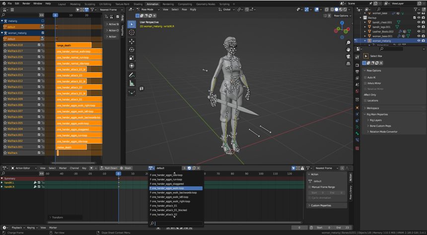
State Machine AI pattern for melee enemies
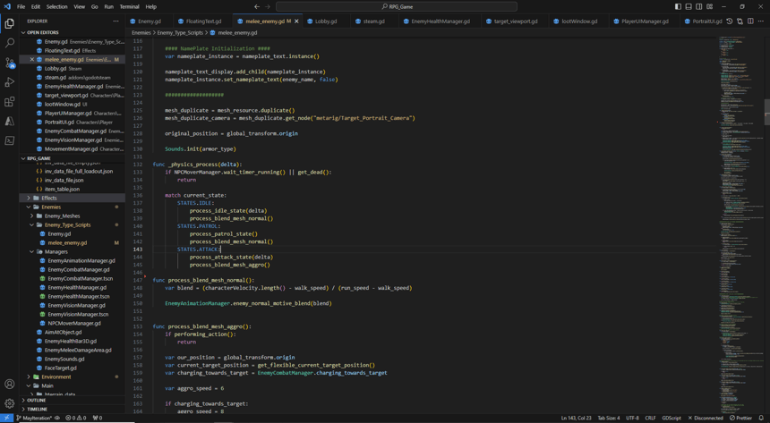
Refined bandit enemy with Auto Rig Pro
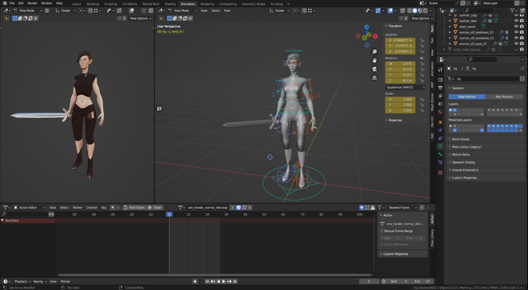
Character creation iteration
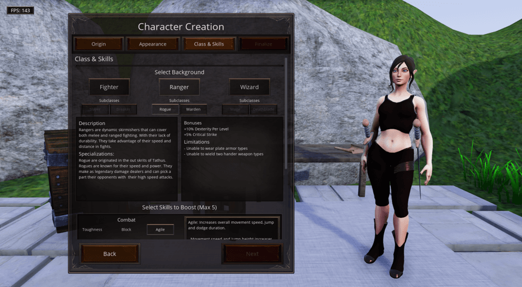
Save/Loading functionality
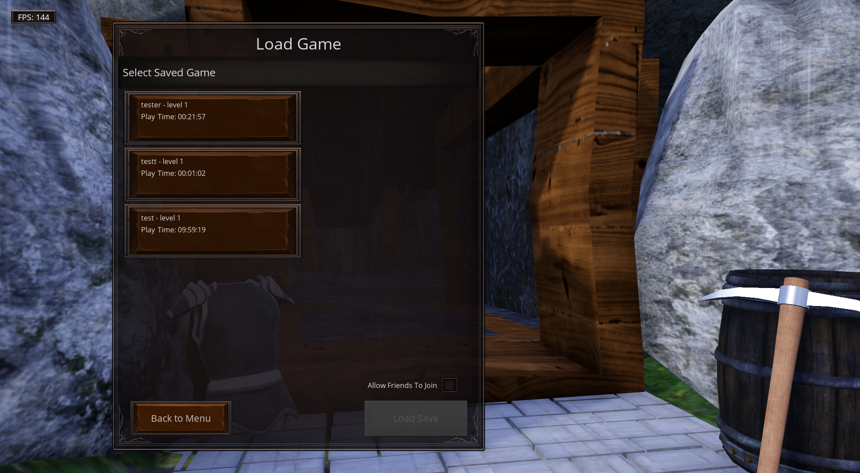
Settings menu
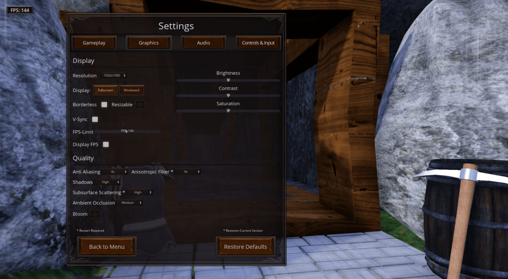
World creation play testing of quest chaining
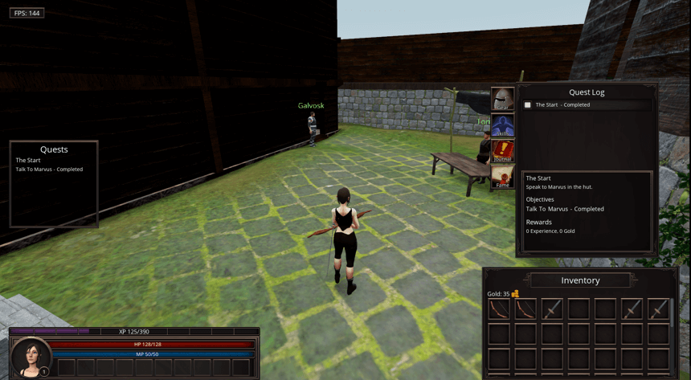
Additional testing
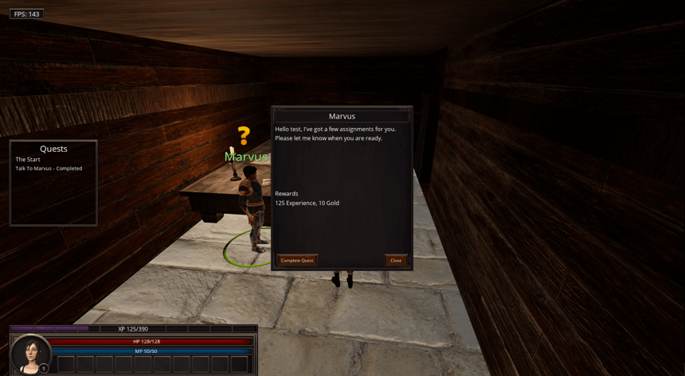
Test World
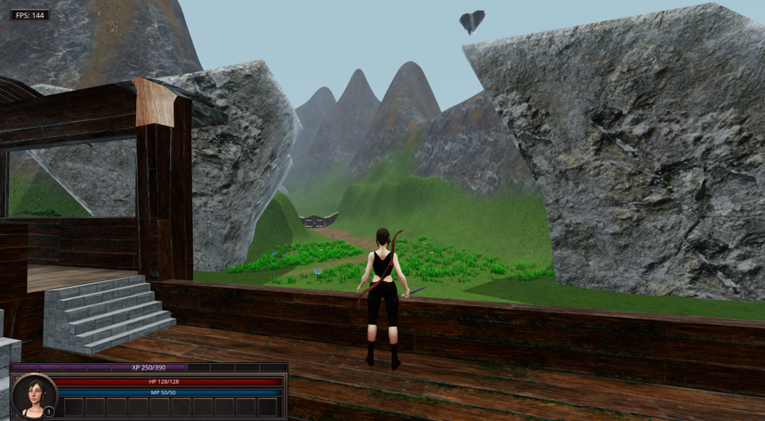
Container looting mechanic
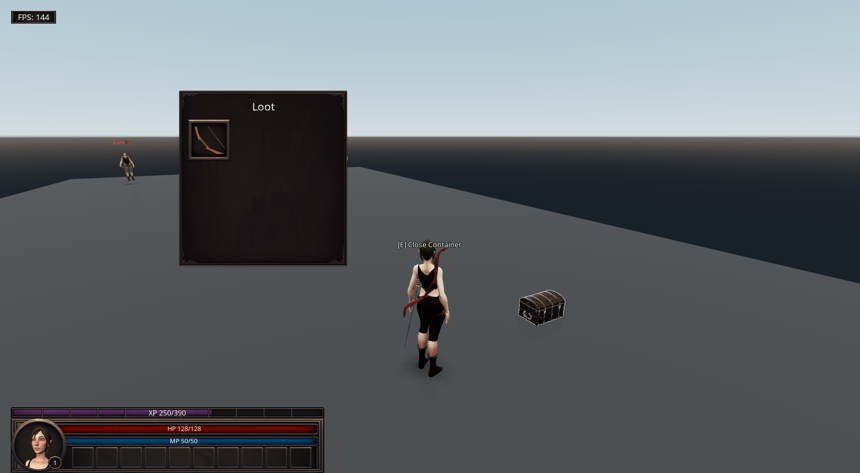
Enemy looting mechanic
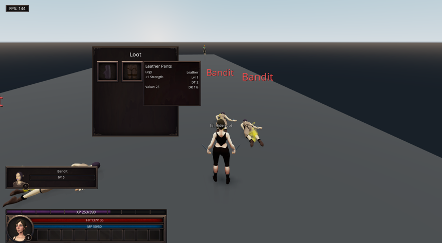
Different World Test angle
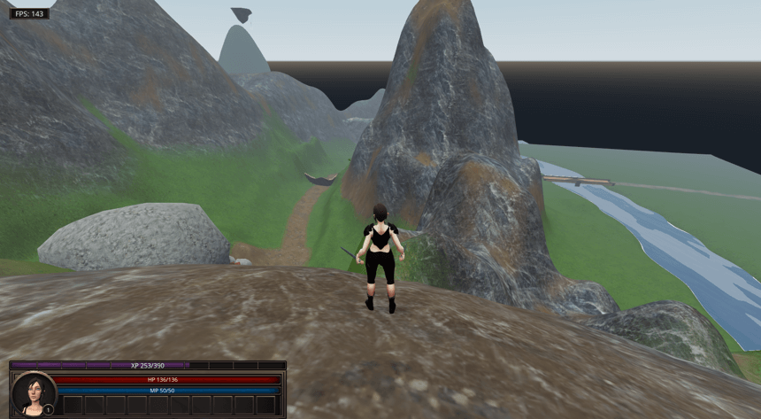
Summary of Systems
This list does not cover every system I built, but a highlight of the major systems that
were created.
- Character In-game UI/UX - Player details, pausing, equipment, quests, and inventory
- Animation system - Animate differently based on the type of weapon being held while
interacting with the world.
Dynamic call method loading during compile time.
- Gear Management - Ability to equip, unequip, store gear pieces to either sell or obtain to
wear. All gear changes would display on character.
- Responsive Movement - Instant character feedback the moment an input is pressed.
- Advanced Movement & Combat - Crouching, sprinting, dodging, attack comboing, and blocking.
- Smart Combat - Attack the closest target when attacking, block the closest target, and target cycling(tabbing) targeting.
- Enemy AI States - Respond differently based on the player actions and reset after a delay
- World Creation - Water shadars for rivers and waterfalls. Experimenting with general optimizing techniques while
facing open-world challenges towards performance
- Saving & Loading - Locally storing save files and retrieving to load where you left off.
- NPC Questing - Quest system incorpating dialogue, chaining, tracking, and completion.
- World Looting - Ability to loot containers and enemies.
- Character Progression - Obtaining gear, gold, fame, skill and level progression.
An extensive amount of 3D modeling was done as well, mainly towards character creation and animation.
Next Steps
My intensions for the short term is to work towards making the game be presentable for others to download and play as is.
Long term, I look to migrate this project to Godot 4 and implement things like multiplayer and tighten up the scope. This long term idea, may just be a grand goal
type game. I will see as time goes on.